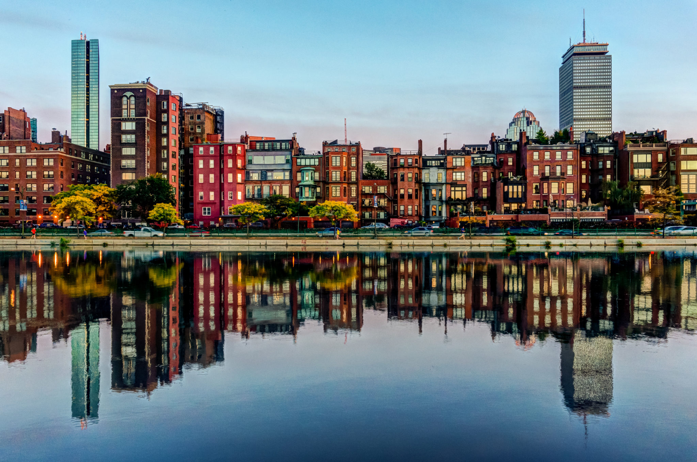
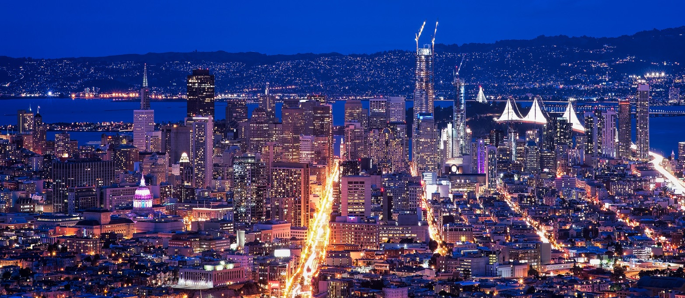
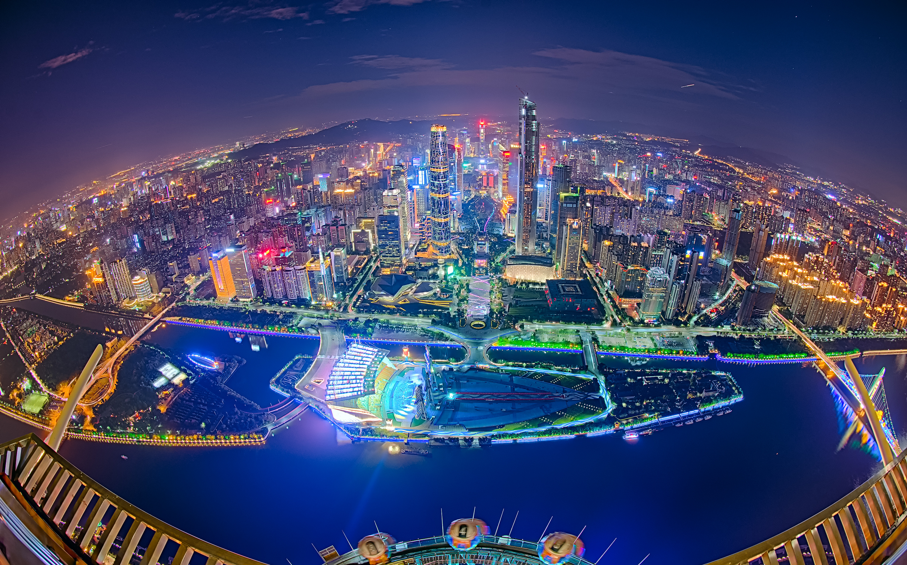
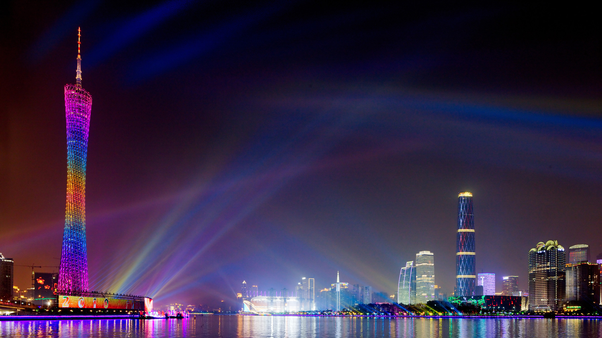
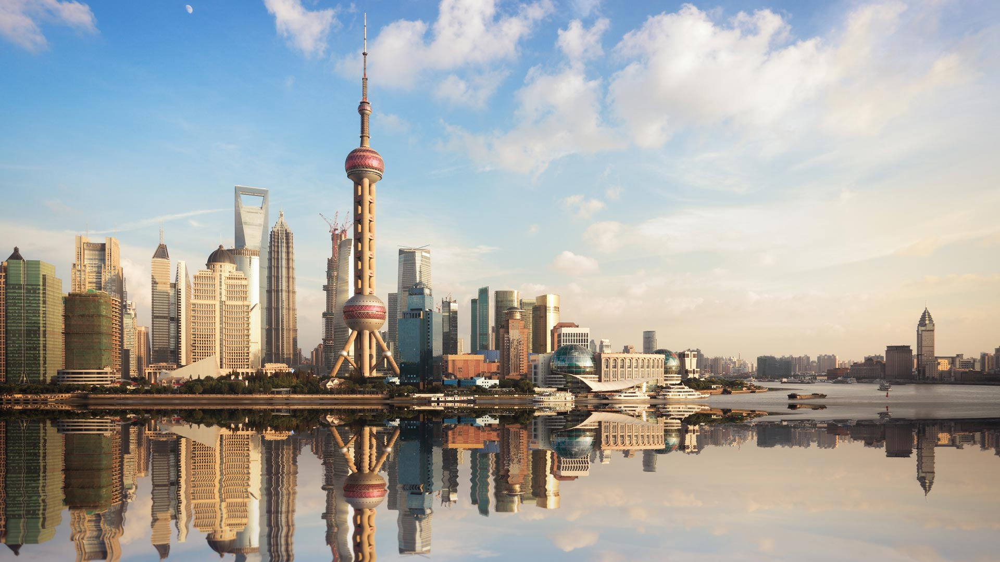
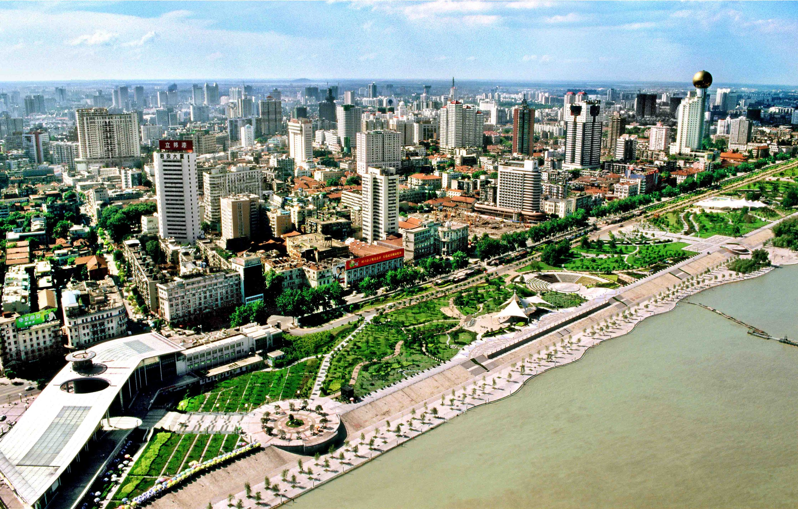

1. 纽约市
纽约市（City of New York，简称NYC），位于美国纽约州东南部大西洋沿岸，是美国第一大城市及第一大港。
纽约坐拥大纽约都会区的核心地带，是一座世界级国际化大都市，也是世界第一大经济中心，其GDP于2013年超越东京，位居世界第一。截至2010年，纽约的财产所有总值为813万亿美元，直接影响着全球的金融、媒体、政治、娱乐以及时尚界。

纽约是美国人口最多的城市，也是个多族裔聚居的多元化城市，拥有来自97个国家和地区的移民，在此使用的语言达到800种。截至2014年，纽约市大约有849万人，居住在789平方千米的土地上。而纽约大都市圈则有2000万人左右。
纽约在商业和金融的方面也发挥着巨大的影响力。纽约的金融区，以曼哈顿下城及华尔街为龙头，被称为世界的金融中心，世界500强企业中，有56家总部企业位于纽约。 纽约证券交易所是世界第二大证交所，它曾是最大的交易所，全球市值为15万亿美元，直到1996年它的交易量被纳斯达克超过。纽约时报广场位于百老汇剧院区枢纽，被称作“世界的十字路口”，亦是世界娱乐产业的中心之一。曼哈顿的唐人街是西半球最为密集的华人集中地。
纽约地铁是世界上最为发达的快速交通系统之一，提供一日24小时、一周七日的服务。 纽约拥有哥伦比亚大学、纽约大学和洛克菲勒大学等名校。
纽约是美国文化、艺术、音乐和出版中心，有众多的博物馆、美术馆、图书馆、科学研究机构和艺术中心，美国三大广播电视网和一些有影响的报刊、通讯社的总部都设在这里。


2. 华盛顿特区

华盛顿哥伦比亚特区（Washington, D.C.）英文全称为Washington District of Columbia，缩写为WDC，简称为华盛顿，又称华都、华府，美利坚合众国的首都，靠近弗吉尼亚州和马里兰州，位于美国的东北部、中大西洋地区，是1790年作为首都而设置、由美国国会直接管辖的特别行政区划，因此不属于美国的任何一州。位于北纬38°53.707′，西经77°02.182′。UTC-5 EST 东部标准时区，使用东部标准时间。市区面积178平方千米。2012年华盛顿哥伦比亚特区人口为64.6 万，位列全美各州第49位，其中58%为黑人。
华盛顿是美国的政治中心，因此经济色彩不浓，是大多数美国联邦政府机关与各国驻美国大使馆的所在地，也是世界银行、国际货币基金组织、美洲国家组织等国际组织总部的所在地，还拥有为数众多的博物馆与文化史迹。

华盛顿位于马里兰州和弗吉尼亚州之间。这里原是一片灌木丛生之地，只有一些村舍散落其间。1789年，美国邦联政府正式成立，乔治·华盛顿当选为首任总统。当国会在纽约召开第一次会议时，建都选址问题引起激烈争吵，南北两方的议员都想把首都设在本方境内。1790年国会最后达成妥协，由总统华盛顿选定南北方的天然分界线－－波托马克河畔长宽各为16公里的地区作为首都地址，并请法国工程师皮埃尔·夏尔·朗方主持首都的总体规划和设计。
华盛顿哥伦比亚特区的最高权力机构为美国国会，通过华盛顿市政府实施管理。但是华盛顿市民在众议院仅有一名有选举权的代表，在参议院没有代表。 • 约翰·霍普金斯大学（The Johns Hopkins University） • 乔治城大学（Georgetown University） • 乔治·华盛顿大学（George Washington University） • 华盛顿哥伦比亚特区美国社区学院协会（American Association of Community Colleges）的发源地。 • 哥伦比亚特区大学（University of the District of Columbia），华盛顿哥伦比亚特区唯一的公立大学。 • 国家国防大学（National Defense University） • 美国大学（American University） • 美国天主教大学（Catholic University of American） • 可可然艺术学校（Corcoran School of Art） • 哈沃德大学（Howard University） • 维嫩山学院（Mount Vernon College） • 奥伯雷特学院（Oblate College） • 东南大学（Southeastern University） • 史脆瑞尔学院（Strayer College） • 三圣学院（Trinity College） • 盖路德特大学（Gallaudet University）：专门收耳聋与听力损伤的学生。

3. 马萨诸塞州
波士顿（Boston）是美国马萨诸塞州的首府和最大城市，也是美国东北部的新英格兰地区的最大城市。
波士顿位于美国东北部大西洋沿岸，创建于1630年，是美国最古老、最有文化价值的城市之一。美国历史上发生的波士顿倾茶事件，最终引起著名的美国独立战争。
波士顿是美国东北部高等教育和医疗保健的中心，是全美人口受教育程度最高的城市。它的经济基础是科研、金融与技术—特别是生物工程，并被认为是一个全球性城市或世界性城市。
波士顿被誉为“美国雅典”，是因为在波士顿大都会区拥有超过100所大学，超过25万名大学生在此接受教育。在市区内，东北大学是一所大型的私立大学，在芬威区有一座校园。波士顿大学(BOSTON UNIVERSITY)是世界上最大的大学之一，位于查尔斯河畔的联邦大道。惠洛克学院、西蒙斯学院、马萨诸塞药学院和温沃斯理工学院组成了芬威大学群，毗邻东北大学。萨福克大学是一所小型私立大学，以法学院著称，校园坐落在灯塔山。新英格兰法学院是一所小型的私立法学院，位于剧院区，创建时是美国唯一的一所女子法学院。爱默生学院是一所小型的私立学院，在表演艺术领域、新闻、写作和电影方面有很高的声望，位置靠近波士顿公园。该市还拥有几所音乐学校和美术学校，包括马萨诸塞美术学院、新英格兰音乐学院（美国最古老的独立音乐学校）、波士顿音乐学校、波士顿美术博物馆学校和伯克利音乐学院。波士顿主要的公立大学是马萨诸塞大学波士顿分校，位于多尔切斯特的哥伦比亚角，该市的2所社区学院是洛克斯布里社区学院和邦克山社区学院。
几所美国主要的大学都位于波士顿外围，在该市有重要影响。哈佛大学(HARVARD)是美国最古老的高等教育机构，位于查尔斯河对岸的剑桥。哈佛商学院和哈佛医学院位于波士顿，并正在计划在波士顿的阿尔斯顿附近进行重大扩展。麻省理工学院（MIT）最初位于波士顿市内，很长时期称为“波士顿理工学院”（1865-1916），在1916年才跨过查尔斯河迁往剑桥。塔夫茨大学(TUFTS)管理着它的医学院和牙科学院，塔夫茨-新英格兰医疗中心是一个拥有451个床位的医学学术机构，拥有一个科室齐全的成人医院和流动的儿童医院。波士顿学院(BC)是波士顿最早的高等教育机构，也是美国最古老的教会大学之一，BC现在的主校区位于波士顿西郊的栗树山（CHESTNUT HILL），同时在邻近的牛顿（Newton）和布莱顿（Brighton）设立有分校区。而位于沃尔瑟姆镇的布兰迪斯大学(BRANDEIS)则是一所全新型的私立综合性大学，学术和校园气氛活跃，虽然仅有60多年的建校历史但却早已声名卓著。哈佛大学(HARVARD)、麻省理工学院(MIT)、塔夫茨大学(TUFTS)、波士顿学院(BOSTON COLLEGE)、布兰迪斯大学(BRANDEIS)这五所私立顶级名校实行精英教育，教育质量优良， 常年在美国大学US NEWS 综合排名中名列前茅， 这五所综合性大学被称为“波士顿五大名校”。
波士顿公立学校是美国最古老的公立学校系统，从幼儿园到12年级，共有58,600名学生。该系统包括145所学校，其中包括波士顿拉丁学校（最古老的公立学校，成立于1635年；有7-12年级，在7-9年级通过公开考试招收学生），英文中学（最古老的公立中学，成立于1821年）和马特学校（最古老的公立小学，成立于1639年。3,000名少数族裔学生通过大都会教育机会委员会（METCO）得到在郊区学校就学的机会。2002年，福布斯杂志将波士顿公立学校系统列为美国最好的大城市学校系统，毕业率达到82%。
此外波士顿还拥有不少优质的私立学校、特许学校（charter school）和教会学校。其中波士顿学院高中（BC High）成立于1863年， 位于波士顿市内，是一所历史悠久的男校。 知名大学 主要有以下几所大学 哈佛大学（HARVARD） 麻省理工学院（MIT） 塔夫茨大学（TUFTS） 波士顿学院（BOSTON COLLEGE） 布兰迪斯大学（BRANDEIS） 波士顿大学（BOSTON UNIVERSITY） 东北大学（NEU） 麻省大学 (UMass) 本特利大学 (Bentley) 萨福克大学 爱默生学院 威廉姆斯学院 阿莫斯特学院 曼荷莲学院 （美国第一所女子学院 “七姐妹”女校） 史密斯学院（“七姐妹”女校之一） 新英格兰音乐学院 伯克利音乐学院

4. 宾夕法尼亚州
宾夕法尼亚州（Commonwealth of Pennsylvania）是美国东北部的一州，为立国13州之一。著名城市有费城。费城（Philadelphia）位于美国宾夕法尼亚州东南部，是特拉华河谷都会区的中心城市，市区东起特拉华河，向西延伸到斯库基尔河以西，面积334㎞²。费城是美国最老、最具历史意义的城市之一，1790-1800年，在华盛顿建市前曾是美国的首都，因此在美国史上有非常重要的地位。
费城别称“友爱之城”，是宾州最大城市，与新泽西州仅一河之隔；是美国第5大城市，仅次于纽约、洛杉矶、芝加哥和休斯敦；费城都会区是全美第4大都会区，仅次于纽约、洛杉矶和芝加哥。费城市区人口共有1,553,165人（2013年），都会区人口超过715万人（2013年）。费城地理位置优越，向东北距离纽约大约160公里（2小时车程），向西南距离首都华盛顿约220公里（3小时车程）。
费城是宾州最大的经济体城市，2013年，费城经济圈的经济产值（GDP）4207.68亿美元，排名美国第7，是美国东部仅次于纽约和华盛顿的第三经济城市。费城港是世界最大的河口港之一。有运河沟通特拉华河和切萨皮克湾，设有面积约29公顷的自由贸易区，大市区内有6座大桥横跨特拉华河，与对岸新泽西州各城镇相连。费城国际机场位于市中心西南12公里处，客、货运量在国内居前列。费城三十街车站则为美国东北部的铁路枢纽之一，是美铁系统内第三繁忙的车站。2015年11月费城入列世界遗产城市，是第一个入列世界遗产城市的美国都市。
费城大学云集，其中包括著名的常青藤名校宾夕法尼亚大学，著名的沃顿商学院即是宾大的商学院。
市内大学或学院有： 宾夕法尼亚大学(University of Pennsylvania)US NEWS 最新排名第8位。 德雷塞尔大学（Drexel University） 天普大学(Temple University) 圣约瑟夫大学（Saint Joseph's University） 费城社区学院(Community College of Philadelphia) 费城大学(Philadelphia University) 费城艺术大学(The University of the Arts) 费城科学大学(University of the Sciences) 拉萨尔大学(La Salle University) 栗山学院(Chestnut Hill College) 皮尔斯学院(Peirce College) 摩尔艺术与设计学院(Moore College of Art and Design) 柯蒂斯音乐学院（Curtis Institute of Music)全世界音乐学院排名前三 托马斯杰斐逊大学（Thomas Jefferson University）

5. 佛罗里达州
佛罗里达州（Florida）是美国东南部的一个州。位于东南海岸突出的半岛上。东濒大西洋，西临墨西哥湾，北与亚拉巴马州和佐治亚州接壤。面积为151670平方公里。
海岸线总长13500公里，仅次于阿拉斯加州，居全美第二位。首府塔拉哈西（Tallahassee）。“佛罗里达” 源于西班牙语，意为“鲜花盛开的地方”。
奥兰多位于美国佛罗里达州的中部，是世界上最好的休闲旅游城市之一。奥兰多市区有多个面积不小的湖泊，市区的街道也非常的干净，原住这里居民也非常的友善，而且这里的气候温度也是旅行、露营、水上活动、蜜月及家庭旅行的最佳去处，每年到奥兰多旅游的游客约2600万以上。
奥兰多拥有与洛杉矶迪斯尼齐名的世界上最大的迪斯尼乐园，在Lock Haven区内还有奥兰多艺术博物馆、橙县历史博物馆及附近的哈利花园，美国境内最大的的海洋世界也位于奥兰多，值得一提的是由华纳兄弟与环球影城公司合作兴建的“哈利波特的魔法世界”，它就位于两大电影制片商在奥兰多面积达七百八十七英亩的主题公园内，另外还有老少皆宜的主题乐园，如华特▪迪士尼世界、环球影城、冒险岛乐园及无数的旅游景点，造就了它在美国人心中最最佳观光地位之一。奥兰多景点美，就美在它的多彩、新奇、动感，还有那宜人的温馨。奥兰多虽小，小城中却有大世界。
迈阿密（Miami）是美国佛罗里达州第二大城市，位于佛罗里达半岛比斯坎湾。迈阿密还是南佛罗里达州都市圈中最大的城市，这个都市圈由迈阿密-戴德县、布劳沃德县和棕榈滩县组成，人口超过559万人，是美国人口最为稠密的城市之一，美国东南部最大的都市圈，也是全美第四大都市圈。
迈阿密是国际性的大都市，在金融、商业、媒体、娱乐、艺术和国际贸易等方面拥有重要的地位，也是许多公司、银行和电视台的总部所在。是文化的大熔炉，受庞大的拉丁美洲族群和加勒比海岛国居民的影响很大，与北美洲、南美洲、中美洲以及加勒比海地区在文化和语言上关系密切，因此有时还被称为“美洲的首都”。
2008年，迈阿密被《福布斯》杂志评为“美国最干净的城市“。 2009年，迈阿密还被瑞士联合银行评为美国最富裕城市和全球第五富裕城市。 学院与大学 诺瓦东南大学(Nova Southeastern University) 美国东南最大私立大学 贝瑞大学(Barry University) 强生和威尔士大学(Johnson and Wales University) 迈阿密艺术与设计国际大学(Miami International University of Art and Design) 迈阿密大学(University of Miami) 最新US NEWS排名第48位 佛罗里达国际大学（Florida International University） 佛罗里达纪念大学（Florida Memorial University） 迈阿密-戴德学院(Miami-Dade College) 圣托玛斯大学（St.Thomas University） 著名高中 贝伦耶稣预备学校(Belen Jesuit Preparatory School) 克里斯托弗·哥伦布中学(Christopher Columbus High School)) 珊瑚礁中学(Coral Reef High School) 设计与建筑中学(Design and Architecture Senior High School) 迈克尔·M·克罗普博士中学(Dr. Michael M. Krop High School) 格列弗预备学校(Gulliver Preparatory School) 拉萨尔中学(LaSalle High School) 海事与科学技术高等专科学校(MAST Academy High School) 迈阿密中学(Miami High School) 迈阿密棕榈中学(Miami Palmetto Senior High School) 新世界艺术学校(New World School of the Arts) Ransom Everglades Middle School 威廉·特纳高等技术学校(William Turner Technical High School) Miami Country Day School

6. 加尼福尼亚州
加利福尼亚州（State of California）是美国西部太平洋沿岸的一个州，州政府位于萨克拉门托。北接俄勒冈州，东界内华达州和亚利桑那州，南邻墨西哥，西濒太平洋。面积411013km²，它的名称取自西班牙传说中一个小岛的名称。
加州西北角有雷德伍德国家公园；东部内华达山脉西侧坡山麓地带有约塞米蒂国家公园、金斯峡谷国家公园；东南部的死亡谷国家公园、约书亚树国家公园。世界知名的“好莱坞”和“硅谷”均在州内。

州花是金罂粟 (Golden Poppy)。州鸟是加州鹑 (California Valley Quail)。州树是加州红木 (California Redwood)。州座右铭是“我已找到它” (I have found it)。
2016年6月，美国加利福尼亚州政府公布的数据显示，2015年加州经济总量已经超过法国，成为全球第六大经济体。
洛杉矶（Los Angeles），位于美国加利福尼亚州西南部。是加州第一大城市也是全美第二大城市，常被称为“天使之城”（City of Angels）。
洛杉矶市区面积为1214.9km²，拥有约397.6万人口（2016年）；而洛杉矶-长滩-圣安娜都会区拥有约1300万人口（2013年），大洛杉矶地区（Greater Los Angeles Area）所涵盖的范围更大，包括5个县，大约1800万人口。洛杉矶是美国西部最大的都会区（另一大为加州北部的旧金山湾区）。
洛杉矶是全世界重要的工商业、国际贸易、科教、娱乐和体育中心之一。 拥有美国西部最大的海港，也是美国石油化工、海洋、航天工业和电子业的最大基地之一。洛杉矶拥有许多世界知名的高等教育机构，大洛杉矶地区的著名高等学府包括加州理工学院（Caltech）、加州大学洛杉矶分校（UCLA）、南加州大学（USC）、佩珀代因大学（Pepperdine University）等。[1-3] 娱乐方面，好莱坞、加州迪士尼乐园、环球影城等等都位于洛杉矶，南加州的奢华之城比佛利山庄也坐落在洛杉矶的中心地带，众多国际名流居住于此。 体育方面，洛杉矶还曾主办了1932年洛杉矶奥运会、1984年洛杉矶奥运会，即将主办2028年洛杉矶奥运会。
文化教育 洛杉矶的文化和教育事业也很发达。这里有世界著名的加州理工学院、加利福尼亚大学洛杉矶分校（US NEWS 最新排名24位）、南加利福尼亚大学，亨廷顿图书馆、格蒂博物馆等。洛杉矶公共图书馆藏书量居全美第三位。洛杉矶还是世界上屈指可数的举办过两届夏季奥运会的城市。 公立大学 洛杉矶市拥有3所公立大学：加利福尼亚大学洛杉矶分校（UCLA）、北岭加州州立大学（CSUN）和洛杉矶加州州立大学（CSULA）。 私立大学 该市的私立大学有南加州大学（USC）,佩珀代因大学（Pepperdine University),加州理工学院(Cal Tech),安蒂奥克大学（Antioch University）的洛杉矶校区，罗耀拉玛利曼大学（Loyola Marymount University，LMU）以及罗耀拉法学院，圣玛丽山学院（Mount St. Mary's College），西方学院（Occidental College），东洛杉矶学院（East Los Angeles College，简称ELAC）等。
旧金山（San Francisco），又译“三藩市”、“圣弗朗西斯科”，美国加利福尼亚州太平洋沿岸港口城市，是世界著名旅游胜地、加州人口第四大城市。旧金山临近世界著名高新技术产业区硅谷，是世界最重要的高新技术研发基地和美国西部最重要的金融中心 ，也是联合国的诞生地（1945年《联合国宪章》）。
旧金山属亚热带地中海气候，拥有享誉世界的旧金山湾区、金门大桥和渔人码头，气候冬暖夏凉、阳光充足，临近众多美国国家公园（如约塞米蒂国家公园）和加州葡萄酒产地纳帕谷，被誉为“最受美国人欢迎的城市”。1769年西班牙人发现此地，1848年加入美联邦。19世纪中叶旧金山在淘金热中迅速发展，华侨称为“金山”，后为区别于澳大利亚的墨尔本，改称“旧金山”。截止到2014年7月，全市人口约85万，其中华人18万[4-5] ，是西半球华人人口密度最高的地区之一，华人总数量仅次于纽约。
旧金山湾区是世界最重要的科教文化中心之一，拥有的世界著名高等学府包括公立型的加州大学伯克利分校和私立型的斯坦福大学，以及世界顶级医学中心加州大学旧金山分校 。逾百位诺贝尔奖得主（伯克利94位、斯坦福67位）、菲尔兹奖得主（伯克利13位、斯坦福7位）和图灵奖得主（伯克利23位、斯坦福20位）在湾区工作或求学；更有超过200位奥运会冠军（斯坦福139枚金牌、伯克利117枚金牌）从旧金山湾区走出。旧金山湾区从20世纪起一直是美国嬉皮士文化、近代自由主义和进步主义的中心之一，还有全美最大艺术院校旧金山艺术大学。
圣地亚哥市（San Diego）是加利福尼亚州第二大城市，也是美国第八大城市，位于该州南端圣迭戈湾畔，南距墨西哥边境20公里，市区面积829平方公里，人口137万多，有很多墨西哥和西班牙人后裔；2015-2016年统计，白种人占人口的64%，拉美及墨裔占32%，亚裔占10%。大都市区包括附近各海滩和高地等，面积11020平方公里；大都市区包括18个小的城市，总人口超过280万人，大多聚居在离开海滨不远的地区。
7. 德克萨斯州
休斯敦（Houston），是美国德克萨斯州的第一大城，全美国第四大城市，墨西哥湾沿岸最大的经济中心。面积为1,440千平方公里，市名是以当年德克萨斯共和国总统山姆·休斯敦（Sam Houston）命名的。
休斯敦是哈里斯县（全国第三大县）的县城。休斯敦在密苏里市的东面，西南部分伸入福遍县，东北一小部分伸入蒙哥马利县。
休斯敦创建于1836年，合并于1837年，是美国成长最迅速的大城市之一，也是全美最大的一个没有规划法的大城市。 1900年，休斯敦有45,000人口，排名美国第85位。2014年美国人口统计指出，城市人口总数达到220万人。大休斯敦都会区是美国第五大都会区（9个县），2014年7月1日人口6,490,180人。
休斯敦以其能源（特别是石油）、航空工业和运河闻名世界。休斯敦港是世界第六大港口，美国最繁忙的港口，外轮吨位第一，不分国籍则居第二位。财富500强总部仅次于纽约市。休斯敦是德克萨斯医疗中心的所在地，世界最大和最重要的研究和治疗机构的集中地。休斯敦还是美国27个超过170万人口的重要大都会地区中生活消费和房价最低的。休斯敦被全球化和世界城市研究小组和网络（GaWC）称为“全球城市。 休斯敦的官方绰号为“太空城（Space City）”，因为它是约翰逊航空中心的所在地，任务监控中心也设在这里（因此，“休斯敦”是在月球上说的第一个词）。许多当地人喜爱称作“牛沼城”。其他绰号还有“H镇”、“脚爪城”或“蒙古城”。
休斯敦大学 休斯敦大学（University of Houston,简称UH）位于美国南部徳克萨斯州休斯敦市。休斯敦是美国第四大城市，大都会区人口约700万，举世闻名的美国宇航中心和世界最大的医疗中心坐落在该市南部。休斯敦还是美国石油化工中心，享有“世界能源之都”的美称。休斯敦港口是美国第二大港口（世界第六大），该港口的外贸吞吐量为全美第一。2001年，休斯敦有23家公司被美国《财富》杂志列入世界500强。 休斯敦大学坐落在休斯顿市中心，1927年建校，是美国第四大城市休斯顿市最具活力的公立大学，有近90年年历史，在教学和研究方面是德州最好的大学之一。该校研究多样性，著称于全美。
休斯敦大学属于研究型大学〈research university〉。每年注册的学生中有21%是研究生，而这些学生中有33%接受休斯敦大学的奖学金资助。在这些研究生中，除了商学院、MBA是受学生青睐的热门科系外，因为邻近计算机大厂，使得该校的信息科学的相关科系排名也居高不下。 休斯敦大学有12个学术学院，分别是：建筑学院，商学院，文学与社会科学学院，教育学院，工程学院，技术学院，自然科学与数学学院，制药学院，光学学院，酒店管理学院，法学院，社会工作研究生院。大学的课程涵盖278个学科。因教学质量高，休斯顿大学本科教育生源优异，入学SAT成绩平均为1281。在研究生教育阶段，休斯敦大学重视对学生独立研究能力的培养。 休斯敦大学设有40余个研究中心，并与300余家政府和个人企业建立合作关系，为学生提供诸多实习机会，在超导电性，生物医学工程，石油勘探，经济，教育，虚拟技术方面取得很大成效。因为休斯敦大学的学生多半可以获得很好的实习机会，并有机会申请各种的奖助学金，因此能比其他大学的学生更快地进入社会，体验工作和生活的乐趣。

8. 阿肯色州
阿肯色州（State of Arkansas），简称阿州，是美国南部的一个州份，位处密西西比河中下游，北接密苏里州，西界俄克拉荷马州，南邻路易斯安那州，西南与得克萨斯州接壤，东隔密西西比河与田纳西州和密西西比州相望，其面积137539Km²，人口2810872（2006年）。其首府是小石城。州名来自印第安语，原为夸保族、奥萨格族、卡多族、切罗基族和乔克托族印地安人居住地。

教育事业 阿肯色州有公私立高等院校共计29所，[5] 主要公立综合性大学有： 阿肯色大学菲亚特维尔校区， 中阿肯色大学， 阿肯色州立大学， 阿肯色科技大学， 阿肯色大学小石城分校 职业性大学有阿肯色医科大学， 阿肯色医科大学， 阿肯色大学菲亚特维尔， 阿肯色大学小石城分校都属于阿肯色大学系统，也是该州唯一的大学系统。
1. 广东 Guangdong Province
Guangdong is a province in South China, located on the South China Sea coast. Traditionally romanized as Canton or Kwangtung, Guangdong surpassed Henan and Sichuan to become the most populous province in China in January 2005, registering 79.1 million permanent residents and 31 million migrants who lived in the province for at least six months of the year; the total population was 104,303,132 in the 2010 census, accounting for 7.79 percent of Mainland China's population. The provincial capital Guangzhou and economic hub Shenzhen are among the most populous and important cities in China. The population increase since the census has been modest, the province at 2015 had 108,500,000 people.
Since 1989, Guangdong has topped the total GDP rankings among all provincial-level divisions, with Jiangsu and Shandong second and third in rank. According to state statistics, Guangdong's GDP in 2014 reached RMB 6,779 billion, or US$1.104 trillion, making its economy roughly the same size as Mexico. Since 2011, Guangdong has had the highest GDP among all provinces of Mainland China. The province contributes approximately 12% of the PRC's national economic output, and is home to the production facilities and offices of a wide-ranging set of Chinese and foreign corporations. Guangdong also hosts the largest import and export fair in China, the Canton Fair, hosted in the provincial capital of Guangzhou.
More info Guangzhou traditionally romanized as Canton, is the capital and most populous city of the province of Guangdong in southern China. Located on the Pearl River about 120 km (75 mi) north-northwest of Hong Kong and 145 km (90 mi) north of Macau, Guangzhou has a history of over 2,200 years and was a major terminus of the maritime Road and continues to serve as a major port and transportation hub today.
Guangzhou is situated at the heart of the most-populous built-up metropolitan area in mainland China, an area that extends into the neighboring cities of Foshan, Dongguan, and Shenzhen, forming one of the largest urban agglomerations on the planet. Administratively, the city holds sub-provincial status, and is one of China's five National Central Cities. In 2015 the city's administrative area was estimated to have a population of 13,501,100. Guangzhou is ranked as an Alpha- Global city. In recent years, there has been a rapidly increasing number of foreign residents and immigrants from Southeast Asia, the Middle East and Eastern Europe, as well as from Africa. This has led to it being dubbed the "Capital of the Third World" by at least one Chinese journal though this phrase is not commonly used in China itself.[ The migrant population from other provinces of China in Guangzhou was 40 percent of the city's total population in 2008. Together with Shanghai, Beijing and Shenzhen, Guangzhou has one of the most expensive real estate in China.

Guangzhou has a comparatively recent history of two centuries related to its importance for foreign trade. Long the only Chinese port accessible to foreign traders, the city fell to the British during the First Opium War. No longer enjoying a monopoly after the war, it lost trade to other ports such as Hong Kong (which is close by) and Shanghai, but continued to serve as a major entrepôt. In modern commerce, Guangzhou is best known for its annual Canton Fair, the oldest and largest trade fair in China. For the three consecutive years 2013–2015, Forbes ranked Guangzhou as the best commercial city on the Chinese mainland.
深圳Shenzen Shenzhen is a major city in Guangdong Province, China. It forms part of the Pearl River Delta megalopolis. The city is located in immediately north of Hong Kong Special Administrative Region and holds sub-provincial administrative status, with powers slightly less than a province. Shenzhen was a market town of 30,000 people on the route of the Kowloon–Canton Railway. That changed in 1979 when Shenzhen was promoted to city-status and in 1980 designated China’s first Special Economic Zone (SEZ). Official statistics based on China 2010 Census put Shenzhen's total population of 10,357,938, that included migrants staying at least six months. Popular press speculate that counts do not include migrant workers living in the city who come and go daily weekly or monthly and do not stay the entire year. Such estimates put the instantaneous or sum total of individuals who have lived in Shenzhen for any length of time to at least 18 million. Shenzhen was one of the fastest-growing cities in the world during the 1990s and the 2000s. A nationwide 2015 intercensal survey (mini-census conducted five years after the official census in every decade) surveyed for every city in the country recorded 11.389 million residents (9.186 million holding city residency (hukou), the remainder are considered migratory who were present at least six months of the year), while the household size increased to 2.49 people from 2.11 in 2010, indicative of soaring rents. Those not present six months of the year were not tallied.
Shenzhen's modern cityscape is the result of its vibrant economy made possible by rapid foreign investment since the institution of the policy of "reform and opening" in late 1979 in which SEZ established. Shenzhen is a major financial center in southern China. The city is home to the Shenzhen Stock Exchange as well as the headquarters of numerous home grown multinational well-known companies such as Vanke, JXD, Hytera, CIMC, Shenzhen Airlines, Nepstar, Hasee, Ping An Bank, Ping An Insurance, China Merchants Bank, Tencent, ZTE, Huawei and BYD Shenzhen ranks 22nd in the 2017 edition of the Global Financial Centres Index published by the Z/Yen Group and Qatar Financial Centre Authority. It also has one of the busiest container ports in the world.
2. 成都 Chengdu
Chengdu, formerly romanized as Chengtu, is a sub-provincial city which has served as capital of China's Sichuan province. It is one of the three most populous cities in Western China (the other two are Chongqing and Xi'an). As of 2014, the administrative area houses 14,427,500 inhabitants, with an urban population of 10,152,632. At the time of the 2010 census, Chengdu was the 5th-most populous agglomeration in China, with 10,484,996 inhabitants in the built-up area including Xinjin County and Deyang's Guanghan City.
The surrounding Chengdu Plain is also known as the "Country of Heaven" and the "Land of Abundance". Its prehistoric settlers included the Sanxingdui culture. Founded by the state of Shuprior to its incorporation into China, Chengdu is unique as a major Chinese settlement that has maintained its name (nearly) unchanged throughout the imperial, republican, and communist eras. It was the capital of Liu Bei's Shu during the Three Kingdoms Era, as well as several other local kingdoms during the Middle Ages. After the fall of Nanjing to the Japanese in 1937, Chengdu briefly served as the capital of China. It is now one of the most important economic, financial, commercial, cultural, transportation, and communication centers in Western China. Chengdu Shuangliu International Airport is one of the 30 busiest airports in the world, and Chengdu Railway Station is one of the six biggest in China. Chengdu also hosts many international companies and more than 12 consulates. More than 260 Fortune 500 companies have established branches in Chengdu.

Chengdu is home to the greatest number of universities and research institutes in Southwestern China. It has 49 colleges and universities, including University of Electronic Science and Technology of China, Sichuan University, and Southwestern University of Finance and Economics. In 2010, over 140,000 students graduated from the colleges and universities, more than half of them majored in IT, finance, economics, business management, or foreign languages studies.

Chengdu is the center of higher education and scientific research in Southwest China. • Sichuan University (SCU) (Founded in 1896), including the West China Medical Center of Sichuan University • Southwest Jiaotong University (Founded in 1896) • Southwestern University of Finance and Economics (Founded in 1925) • University of Electronic Science and Technology of China (Founded in 1956) • Sichuan Agricultural University (Founded in 1906) [69] • Sichuan Normal University (Founded in 1946) • Southwest University for Nationalities (Founded in 1951) • Chengdu University of Technology (Founded in 1956) • Southwest Petroleum University (Founded in 1958) • Chengdu University of Traditional Chinese Medicine (CDUTCM) (Founded in 1956)[70] • Sichuan Conservatory of Music (Founded in 1939) • Chengdu University of Information Technology (CUIT) (Founded in 1951)
The United States Consulate General at Chengdu opened on 16 October 1985. It was the first foreign consulate in west-central China since 1949. Currently fourteen countries have consulates in Chengdu. The United Kingdom also has a visa application center in Chengdu.

3. 上海 Shanghai
Shanghai is one of the four direct-controlled municipalities of China and the most populous city proper in the world with a population of more than 24 million as of 2014. It is a global financial centre and transport hub, with the world's busiest container port. Located in the Yangtze River Delta, it sits on the south edge of the estuary of the Yangtze in the middle portion of the East China coast. The municipality borders the provinces of Jiangsu and Zhejiang to the north, south and west, and is bounded to the east by the East China Sea.
As a major administrative, shipping and trading city, Shanghai grew in importance in the 19th century due to trade and recognition of its favorable port location and economic potential. The city was one of five treaty ports forced open to foreign trade following the British victory over China in the First Opium War. The subsequent 1842 Treaty of Nanking and 1844 Treaty of Whampoa allowed the establishment of the Shanghai International Settlement and the French Concession. The city then flourished as a centre of commerce between China and other parts of the world (predominantly Western countries), and became the primary financial hub of the Asia-Pacific region in the 1930s. However, with the Communist Party takeover of the mainland in 1949, trade was limited to other socialist countries, and the city's global influence declined. In the 1990s, the economic reforms
economic reforms introduced by Deng Xiaoping resulted in an intense re-development of the city, aiding the return of finance and foreign investment to the city. Shanghai has been described as the "showpiece" of the booming economy of mainland China; renowned for its Lujiazui skyline, and museums and historic buildings, such as those along The Bund, as well as the City God Temple and the Yu Garden.
Shanghai ranked first in the 2009 and 2012 Program for International Student Assessment(PISA), a worldwide study of academic performance of 15-year-old students conducted by the OECD. Shanghai students, including migrant children, scored highest in every aspect (math, reading and science) in the world. The study concludes that public-funded schools in Shanghai have the highest educational quality in the world. Critics of PISA results counter that, in Shanghai and other Chinese cities, most children of migrant workers can only attend city schools up to the ninth grade, and must return to their parents' hometowns for high school due to hukou restrictions, thus skewing the composition of the city's high school students in favor of wealthier local families.
Shanghai is the first city in the country to implement 9-year mandatory education. The 2010 census shows that out of Shanghai's total population, 22.0% had a college education, double the level from 2000, while 21.0% had high school, 36.5% middle school, and 1.35% primary school education. 2.74% of residents age 15 and older were illiterate. Shanghai has more than 930 kindergartens, 1,200 primary and 850 middle schools. Over 760,000 middle schools students and 871,000 primary school students are taught by 76,000 and 64,000 teaching staff respectively.
Shanghai is a major center of higher education in China with over 30 universities and colleges. A number of China's most prestigious universities are based in Shanghai, including Fudan University, Shanghai Jiao Tong University, Tongji University, East China Normal University (these universities are selected as "985 universities" by the Chinese Government in order to build world-class universities). In 2012 NYU Shanghai was established in Pudong by New York University in partnership with East China Normal University as the first Sino-US joint venture university. In 2013 the Shanghai Municipality and the Chinese Academy of Sciences founded the Shanghai Tech University in the Zhangjiang Hi-Tech Park in Pudong. This new research university is aiming to be a first-class institution on a national and international level. The cadre school China Executive Leadership Academy in Pudong is also located in Shanghai, as well as the China Europe International Business School.

Children with foreign passports are permitted to attend any public school in Shanghai. Prior to 2007 they were permitted to attend 150 select public schools. In 2006 about 2,000 non-Chinese nationals under 18 years of age attended Shanghai public schools.]Students with Hanyu Shuiping Kaoshi (HSK) above 3 or 4 may attend public schools using Mandarin Chinese as the medium of instruction, while students below HSK 3–4 may attend international divisions of public schools or private international schools. Shanghai has the largest number of international schools of any city in China. In November 2015 Christopher Cottrell of the Global Times wrote that Shanghai "prides itself on its international schools".

4. 北京 Beijing
Beijing formerly romanized as Peking, is the capital of the People's Republic of China and the world's second most populous city proper and most populous capital city. The city, located in northern China, is governed as a direct-controlled municipality under the national government with 16 urban, suburban, and rural districts. Beijing Municipality is surrounded by Hebei Province with the exception of neighboring Tianjin Municipality to the southeast; together the three divisions form the Jingjinji metropolitan region and the national capital region of China.

As a city combining both modern and traditional architecture, Beijing is an ever-changing megacity rich in history but also truly modern, exemplified in its global influence in politics, business & economy, education, history, culture, language, music, sporting, architecture, civilization, fashion, art, entertainment, innovation, and technology. Beijing is the second largest Chinese city by urban population after Shanghai and is the nation's political, cultural, and educational center. It is home to the headquarters of most of China's largest state-owned companies and is a major hub for the national highway, expressway, railway, and high-speed rail networks. The Beijing Capital International Airport has been the second busiest in the world by passenger traffic since 2010, and, as of 2016, the city's subway network is the busiest and second longest in the world, after Shanghai's subway system.

The city's history dates back three millennia. As the last of the Four Great Ancient Capitals of China, Beijing has been the political center of the country for much of the past eight centuries. With mountains surrounding the inland city on three sides, in addition to the old inner and outer city walls, Beijing was strategically poised and developed to be the residence of the emperor and thus was the perfect location for the imperial capital. Beijing was the largest city in the world by population for much of the second millennium A.D. The city is renowned for its opulent palaces, temples, parks, gardens, tombs, walls and gates Its art treasures and universities have made it center of culture and art in China.Encyclopædia Britannica notes that "few cities in the world have served for so long as the political headquarters and cultural centre of an area as immense as China." Beijing has seven UNESCO World Heritage Sites – the Forbidden City, Temple of Heaven, Summer Palace, Ming Tombs, Zhoukoudian, as well as parts of the Great Wall and the Grand Canal, all popular locations for tourism. Siheyuans, the city's traditional housing style, and hutongs, the narrow alleys between siheyuans, are major tourist attractions and are common in urban Beijing. The city hosted the 2008 Summer Olympics and was chosen to host the 2022 Winter Olympics, making it the first city to ever host both Winter and Summer Olympics.
Many of Beijing's 91 universities consistently rank among the best in China, of which Peking University and Tsinghua University are ranked in the top 60 universities of the world. In 2015, 52 companies of the Fortune Global 500 company headquarters were located in Beijing, more than any other city in the world, including state-owned enterprises State Grid, China National Petroleum, and Sinopec Group, ranked 2nd, 3rd, and 4th, respectively. Beijing CBD is quickly becoming the center for Beijing's economic expansion, rapid modernization, and radically changing skyline, with the ongoing or recently completed construction of multiple skyscrapers.

Beijing's Zhongguancun area is also known as China's Silicon Valley and China's center of innovation and technology entrepreneurship. According to the 2016 Intonations Expat Insider Survey, Beijing ranked first in Asia in the subcategory "Personal Finance Index," a measure of expats' salaries versus cost of living in the city. Expats live primarily in urban districts such as Dongcheng and Chaoyang in the east, or in suburban districts such as Shunyi.
5. 江苏 Jiangsu Province

Jiangsu formerly romanized as Kiangsu, is an eastern-central coastal province of the People's Republic of China. It is one of the leading provinces in finance, education, technology and tourism, with its capital in Nanjing. Jiangsu is the third smallest, but the fifth most populous and the most densely populated of the 23 provinces of the People's Republic of China. Jiangsu has the highest GDP per capita of Chinese provinces and second-highest GDP of Chinese provinces, after Guangdong. Jiangsu borders Shandong in the north, Anhui to the west, and Zhejiang and Shanghai to the south. Jiangsu has a coastline of over 1,000 kilometres (620 mi) along the Yellow Sea, and the Yangtze River passes through the southern part of the province.

Since the Sui and Tang dynasties, Jiangsu has been a national economic and commercial center, partly due to the construction of Grand Canal. Cities such as Nanjing, Suzhou, Wuxi, Changzhou and Shanghai (separated from Jiangsu in 1927) are all major Chinese economic hubs. Since the initiation of economic reforms in 1990, Jiangsu has become a focal point for economic development. It is widely regarded as China's most developed province measured by its Human Development Index (HDI). However, its development is not evenly distributed, with the Wu-speaking southern part of the province being significantly more well-off than its Mandarin-speaking north, which sometimes causes tensions between northern and southern residents.

Jiangsu is home to many of the world's leading exporters of electronic equipment, chemicals and textiles. It has also been China's largest recipient of foreign direct investment since 2006. Its 2014 nominal GDP was more than 1 trillion US dollars, which is the sixth-highest of all country subdivisions.
As of 2015, Jiangsu hosts 137 institutions of higher education, ranking first of all Chinese provinces. There are two Project 985 and 11 Project 211 universities in the province. A combination of 93 members of Chinese Academy of Sciences and Chinese Academy of Engineering work in Jiangsu. • China Pharmaceutical University, a Project 211 university • China University of Mining and Technology, a Project 211 university • Hohai University, a Project 211 university • Nanjing University, a Project 985 and Project 211 university • Nanjing Agricultural University, a Project 211 university • Nanjing Normal University, a Project 211 university • Nanjing University of Aeronautics and Astronautics, a Project 211 university • Nanjing University of Science and Technology, a Project 211 university • Jiangnan University, a Project 211 university • Southeast University, a Project 985 and Project 211 university • Suzhou University, a Project 211 university
